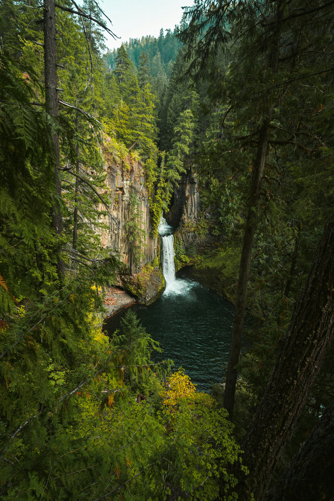
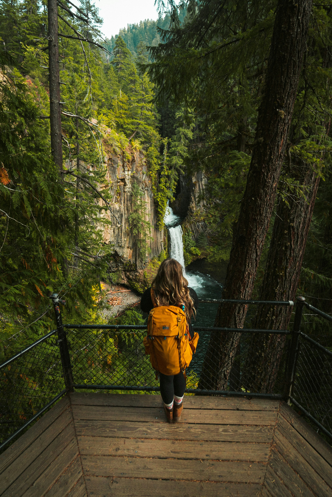
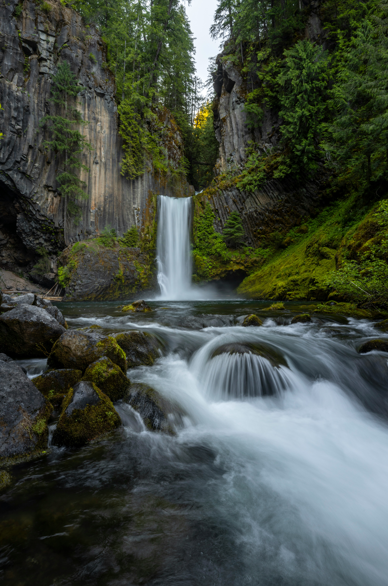

Deep in the heart of the Umpqua National Forest, Toketee Falls plunges through a narrow gorge of ancient columnar basalt. The name comes from the Chinook Jargon word meaning "pretty" or "graceful" — pronounced TOKE-uh-tee — and it's a fitting tribute to one of Oregon's most photographed waterfalls.
What makes Toketee truly unique is its frame. Towering hexagonal basalt columns, formed by cooling lava millions of years ago, create a natural amphitheater around the two-tiered cascade. The upper tier drops about 28 feet before the main 85-foot plunge into a deep, turquoise pool below.
The short, family-friendly hike leads through a lush old-growth forest of Douglas firs, moss-draped maples, and ferns. The trail ends at a wooden viewing platform that overlooks the falls — though adventurous visitors sometimes continue off-trail for a closer look (not recommended, as the rocks are slippery).
Hike Details
Gallery: The Magic of Toketee



Best Time to Visit Toketee Falls
Toketee Falls is beautiful year-round, thanks to consistent water flow regulated by a nearby dam. However, for the best experience:
- Spring (May–June): Peak flow from snowmelt — the falls are thunderous and the forest is lush and green.
- Summer (July–September): Warm weather makes the hike pleasant, but expect crowds. Arrive before 9am.
- Autumn (October): Golden light filters through changing leaves — fewer visitors and stunning photography conditions.
- Winter: The road may be icy, and the trail can be slick. Beautiful solitude if you're prepared.
For the best light, visit early morning or late afternoon when the sun angles into the gorge and illuminates the basalt columns.
Photography at Toketee Falls
The columnar basalt frame makes Toketee a photographer's dream. Here's how to capture it:
- Bring a polarizer — it cuts glare on the wet rocks and deepens the blue of the pool.
- Use a tripod for long exposures — the water becomes silky while the basalt stays sharp.
- Shoot early or late — soft light reduces harsh shadows and brings out the green moss.
- Include the columns — the hexagonal basalt formations are what make Toketee unique.
The viewing platform is elevated — a wide-angle lens (16–24mm) is ideal for capturing the full scene. If you're comfortable with off-trail travel, a short scramble down to the pool level offers a completely different perspective.
Getting to Toketee Falls
Toketee Falls is located off Highway 138 in the Umpqua National Forest, about 45 miles east of Roseburg or 60 miles west of Crater Lake. GPS coordinates: 43.2737° N, 122.4232° W.
From Highway 138, turn north onto Forest Road 34 (signed for Toketee Lake). Follow it for about 0.5 miles to the trailhead parking lot. The lot is small and fills quickly on weekends — arrive early.
Nearby Wonders in the Umpqua Region
The North Umpqua River corridor is filled with natural treasures. Pair Toketee Falls with:
- Watson Falls — 5 miles east, a 272-foot single-drop cascade (one of Oregon's tallest).
- Umpqua Hot Springs — natural terraced hot springs along the river (clothing optional).
- Lemolo Falls — a 160-foot plunge in a secluded canyon.
- Crater Lake National Park — about an hour east, the deepest lake in the United States.
Plan Your Visit
Toketee Falls is a must-see for any waterfall chaser. The short hike makes it accessible for all skill levels, while the dramatic basalt columns reward photographers and nature lovers alike. Pack a picnic, bring your camera, and let the Umpqua's ancient volcanic landscape inspire you.